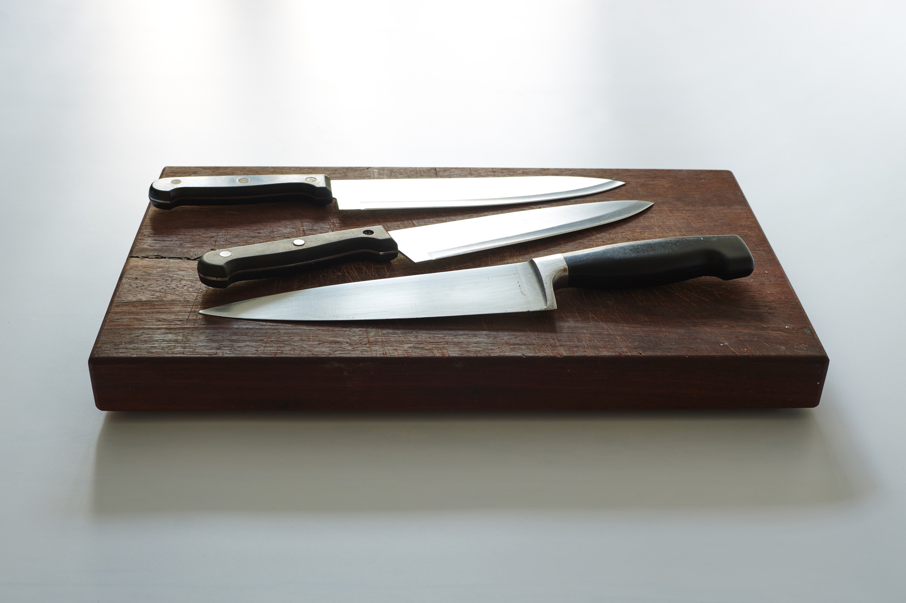
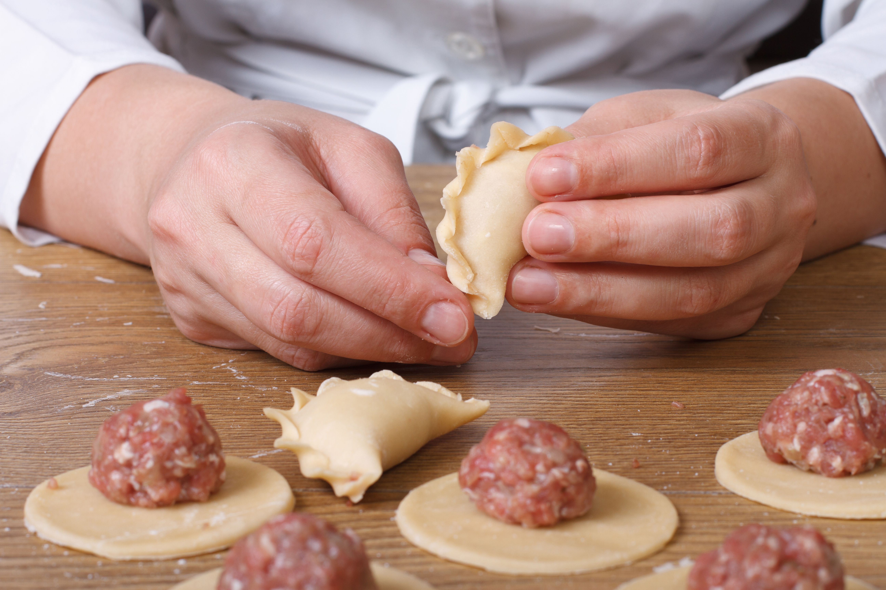
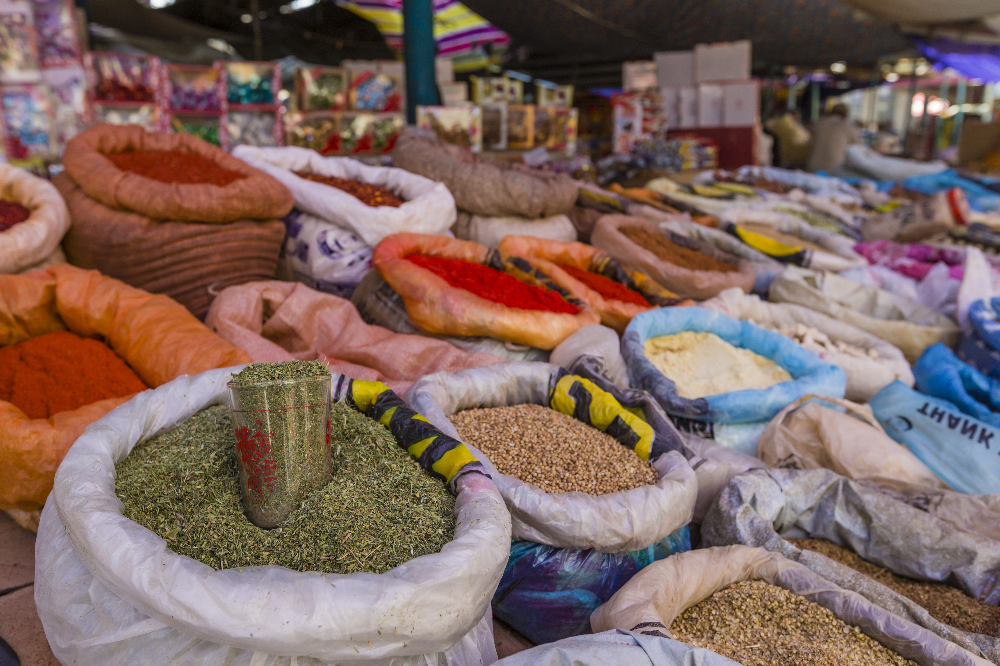
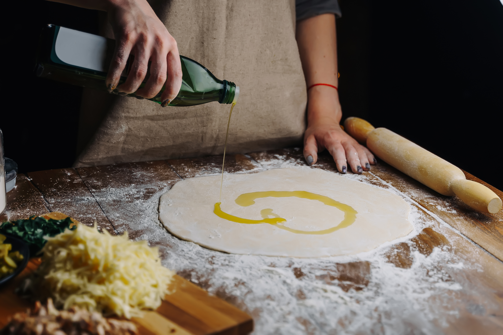
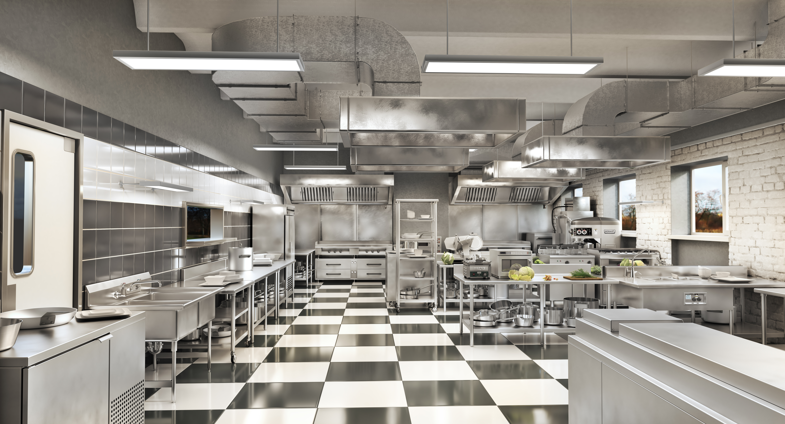

The same knives - new stories

Mads
Professional chef
How a set of Wüsthof knives followed me through Europe’s kitchens and taught me that great food is about more than technique – it’s about people, places and a deeper appreciation for what we eat.

An investment in the future
When I became head chef at a Michelin star restaurant in Copenhagen at the age of 25, it was a big step. I wanted to take my craft seriously, and that’s when I bought my first proper set of Wüsthof knives. They were expensive, but they felt right – solid, precise and made to last. Those knives quickly became an extension of my hands. They helped me work faster, stay focused, and most importantly, gave me the confidence to pursue a career in food. I didn’t know back then that the same knives would one day travel across Europe with me, witnessing some of the most important lessons of my life.

Different kitchens – the same passion
From the elegant restaurants in France to the lively markets in Spain, and the small family-owned trattorias in Italy – every destination taught me something new. I experienced how ingredients, techniques and people shape food, and how each culture has its own rhythm in the kitchen. No matter where I went, my Wüsthof knives were with me. They became a quiet constant in a world of new ingredients, unfamiliar flavours and inspiring people.
Pasta, people and perspective
In a small village outside Bologna, I spent a week with a local chef who invited me into his kitchen. He used simple ingredients, time and a lot of love. Together we made fresh pasta from scratch, and he taught me that good food doesn’t have to be complicated – it just has to be honest. It was a reminder that food is about people. It’s about the conversations around the table, the traditions we pass on, and the joy of sharing a meal. Some of the best dishes I’ve ever tasted were made in the simplest kitchens.

Gallery

Barcelona the marked
Italy pizza chef
Michelin star kitchen CopenhagenExplore recipe
Find new dishes to try
Tips og advice
Improve your cooking
Brand
Discover related brands